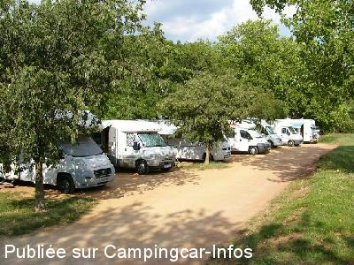
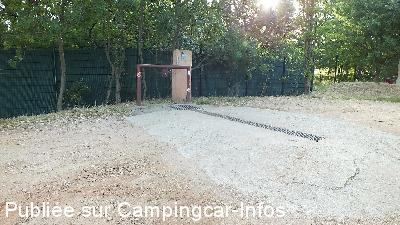

ASN = Aire de services avec stationnement nuit possible de :
CLERMONT L'HERAULT
(N° 683)
Accès/adresse :
Au bord du Lac du Salagou
34800 CLERMONT L'HÉRAULT
34800 CLERMONT L'HÉRAULT
Latitude : (Nord) 43.64674° Décimaux ou 43° 38′ 48′′
Longitude : (Est) 3.38891° Décimaux ou 3° 23′ 20′′
Tarif : 2015
Stationnement, services, électricité : 5 €
Services C-C de passage : 2 €
Jetons au camping
Type de borne : Plateforme
Services :


Poubelles
Autres informations :
6 emplacements
4 prises électriques
Stationnement limité 24 h
Tél : + 33(0)467 961 313
http://www.le-salagou.fr
Parking calme au bord du lac

Le 28/07/2014 par Cody Karson

Le 09/06/2014 par rmlc460
Le 09/06/2014 par rmlc460
Le 19/07/2009 par didierlinares
Le 07/01/2007 par jps68
de
BERNARD19
le 17/04/2016 :
De passage le 7 avril 2016, l'aire existe, je pense qu'il vaut mieux l'éviter par temps humide il doit être bien difficile d'en sortir (le sol est bien troué!) les services laissent à désirer!
Bernard
De passage le 7 avril 2016, l'aire existe, je pense qu'il vaut mieux l'éviter par temps humide il doit être bien difficile d'en sortir (le sol est bien troué!) les services laissent à désirer!
Bernard
de
Derome
le 31/10/2015 :
Je confirme très petite aire et services dégeu un robinet pour toutes les opérations ! !!!et cassette dans la grille mais autrement pratique à deux pas du lac jc
Je confirme très petite aire et services dégeu un robinet pour toutes les opérations ! !!!et cassette dans la grille mais autrement pratique à deux pas du lac jc
de
Benoit Génin
le 06/10/2014 :
aire petite et vite saturée simple grille pour vider les WC sans couvercle ni rinçage.Moralité:odeur pestillencielle sur toute l'aire. J'ai passé la nuit sur un parking gratuit plus loin avec vue sur le lac nettement plus agréable.
aire petite et vite saturée simple grille pour vider les WC sans couvercle ni rinçage.Moralité:odeur pestillencielle sur toute l'aire. J'ai passé la nuit sur un parking gratuit plus loin avec vue sur le lac nettement plus agréable.
de
Cody Karson
le 28/07/2014 :
L'endroit près du lac est un bon endroit, a condition de ne pas être trop tardif car peu de place et un certain manque de civisme car il faut un peu rouspéter auprès de gents qui s'installent pour la journée et qui s'étalent (Store ban déployé, chaises er tables étalées)
L'endroit près du lac est un bon endroit, a condition de ne pas être trop tardif car peu de place et un certain manque de civisme car il faut un peu rouspéter auprès de gents qui s'installent pour la journée et qui s'étalent (Store ban déployé, chaises er tables étalées)
de
rmlc460
le 09/06/2014 :
Site très agréable. Calme assuré, avec en prime le bruissement des enfants de la colo juste à côté.
Nous sommes arrivés le soir pour repartir le lendemain matin.
5 CC occupaient des emplacements plutôt petits. Le 6ème baignait dans la boue. Nous avons donc stationné sur le chemin, face au lac.
Vu personne, et donc gratuit.
La dalle consiste en une brouettée de béton, ce qui fait que le caniveau est surélevé: ni fait ni à faire! Surtout pour les engins un peu bas. Et le terrain est en pente légère.
Du côté de l'eau nous n'avons pas essayé, mais ça n'avait pas vraiment l'air entretenu.
En conclusion, un site très agréable si on
est en autonomie, et qu'on a un peu de chance.
A conseiller hors saison.
Site très agréable. Calme assuré, avec en prime le bruissement des enfants de la colo juste à côté.
Nous sommes arrivés le soir pour repartir le lendemain matin.
5 CC occupaient des emplacements plutôt petits. Le 6ème baignait dans la boue. Nous avons donc stationné sur le chemin, face au lac.
Vu personne, et donc gratuit.
La dalle consiste en une brouettée de béton, ce qui fait que le caniveau est surélevé: ni fait ni à faire! Surtout pour les engins un peu bas. Et le terrain est en pente légère.
Du côté de l'eau nous n'avons pas essayé, mais ça n'avait pas vraiment l'air entretenu.
En conclusion, un site très agréable si on
est en autonomie, et qu'on a un peu de chance.
A conseiller hors saison.
de
Damien
le 17/04/2014 :
§ Bonjour,
aire au calme, à 2 pas du lac, 6 places avec électricité pour 4, mais en parlant avec ses voisins, ont peut partager une prise. Pour le payement jouons le jeu et allons régler les 5 euros au camping,ne filons pas à l'anglaise à la 1ère heure si nous voulons que l'aire perdure!
Si c'est plein, il y a un parking gratuit réservé aux camping cars à 300m de là en contournant le lac par la gauche.
§ Bonjour,
aire au calme, à 2 pas du lac, 6 places avec électricité pour 4, mais en parlant avec ses voisins, ont peut partager une prise. Pour le payement jouons le jeu et allons régler les 5 euros au camping,ne filons pas à l'anglaise à la 1ère heure si nous voulons que l'aire perdure!
Si c'est plein, il y a un parking gratuit réservé aux camping cars à 300m de là en contournant le lac par la gauche.
de
TITITE 35
le 18/04/2013 :
Y avons passé une nuit début avril
Aire à éviter par temps de pluie ;vous êtes dans la boue rouge en plus il faut savoir que si il y a 6 places il n'y a que 4 prises de courant et même si vous ne pouvez pas vous branchez vous payez 5 Euros
Aire gérée par le camping municipal auquel il faut aller pour payer avant de partir en résumé je n'ai que trés moyennement aprécié
Y avons passé une nuit début avril
Aire à éviter par temps de pluie ;vous êtes dans la boue rouge en plus il faut savoir que si il y a 6 places il n'y a que 4 prises de courant et même si vous ne pouvez pas vous branchez vous payez 5 Euros
Aire gérée par le camping municipal auquel il faut aller pour payer avant de partir en résumé je n'ai que trés moyennement aprécié
de
jeanic
le 04/11/2012 :
Même en septembre, l'aire est vite saturée.
La vidange des wc est peu fontionnelle ( il faut lever une grille ce que peu font )et le rinçage impossible sans jeton à retirer au camping pour 100 litres d'eau.Elle est utilisée par de nombreux camping caristes stationnés aux alentours ce qui rend les abords assez sales.
Le site du lac est agréable.
Même en septembre, l'aire est vite saturée.
La vidange des wc est peu fontionnelle ( il faut lever une grille ce que peu font )et le rinçage impossible sans jeton à retirer au camping pour 100 litres d'eau.Elle est utilisée par de nombreux camping caristes stationnés aux alentours ce qui rend les abords assez sales.
Le site du lac est agréable.
de
Lavergne
le 06/11/2011 :
Aire complète lors de notre passage fin octobre. Notre GPS nous a indiqué une aire de stationnement côté Liausson où nous avons pu dormir vers d'autres camping caristes. Vue superbe sur le lac.
Aire complète lors de notre passage fin octobre. Notre GPS nous a indiqué une aire de stationnement côté Liausson où nous avons pu dormir vers d'autres camping caristes. Vue superbe sur le lac.
de
thierry
le 10/03/2011 :
Nous avons passé une très bonne nuit, tranquille sur cette aire vite saturée. Pour le branchement électrique, les premier arrivés sont les premiers servis, avec une vue sur le lac Salagou superbe.
Nous avons passé une très bonne nuit, tranquille sur cette aire vite saturée. Pour le branchement électrique, les premier arrivés sont les premiers servis, avec une vue sur le lac Salagou superbe.
de
Laurent
le 13/08/2010 :
J'ai passé une nuit début aout sur cette aire, cadre très beau, près du lac, mais nuit assez agitée à cause d'une colonie de vacances de l'autre coté du grillage de l'aire. J'ai appris en partant que de nombreux camping-cars stationnaient un peu plus loin, même si c'est interdit, un camping-cariste m'a affirmé que c'était "toléré" (vu qu'il n'y a que 6 places limitées à 24 H). Quand j'ai voulu reprendre un ticket, on m'a spécifié sèchement que c'était limité à 24H, bien que ce ne soit affiché nulle part, et qu'on ne me l'ait pas précisé la veille...
J'ai passé une nuit début aout sur cette aire, cadre très beau, près du lac, mais nuit assez agitée à cause d'une colonie de vacances de l'autre coté du grillage de l'aire. J'ai appris en partant que de nombreux camping-cars stationnaient un peu plus loin, même si c'est interdit, un camping-cariste m'a affirmé que c'était "toléré" (vu qu'il n'y a que 6 places limitées à 24 H). Quand j'ai voulu reprendre un ticket, on m'a spécifié sèchement que c'était limité à 24H, bien que ce ne soit affiché nulle part, et qu'on ne me l'ait pas précisé la veille...
de
Linares
le 09/07/2009 :
Aire petite mais très calme. Le patron du camping, à qui je demandais des renseignements sur l'aire, m'a questionné par quel moyen j'ai appris l'existence de cette aire et quand je lui ai dit que c'était sur le site "campingcar-infos" il a fait l'étonné en me précisant qu'il n'a rien fait pour retrouver son aire sur Internet, mais pas plus de commentaire et aucune agressivité de sa part. Ca reste une bonne étape-repos.
Aire petite mais très calme. Le patron du camping, à qui je demandais des renseignements sur l'aire, m'a questionné par quel moyen j'ai appris l'existence de cette aire et quand je lui ai dit que c'était sur le site "campingcar-infos" il a fait l'étonné en me précisant qu'il n'a rien fait pour retrouver son aire sur Internet, mais pas plus de commentaire et aucune agressivité de sa part. Ca reste une bonne étape-repos.
de
philippe (81) tarn
le 11/11/2008 :
Bonjour. Il faut faire attention, car tous les emplacements étaient pris. Je me suis mis en dehors de l'aire, mais on m'a fait payer les 5€ sans avoir pu profiter de la borne électrique ! Pas très sympa de la part du gardien du camping!
Bonjour. Il faut faire attention, car tous les emplacements étaient pris. Je me suis mis en dehors de l'aire, mais on m'a fait payer les 5€ sans avoir pu profiter de la borne électrique ! Pas très sympa de la part du gardien du camping!
de
Françoise-Christian
le 10/01/2007 :
Attention : avec une vanne de vidange à gauche, il faut se serrer contre la borne et la sortie nécessite de braquer à droite, donc gare au porte à faux ! Pas de possibilité de vidanger les eaux noires et le dispositif du camping ne semble pas en fonction hors saison.
Attention : avec une vanne de vidange à gauche, il faut se serrer contre la borne et la sortie nécessite de braquer à droite, donc gare au porte à faux ! Pas de possibilité de vidanger les eaux noires et le dispositif du camping ne semble pas en fonction hors saison.
de
le 11/09/2006 :
L'endroit est très calme et les nuits tranquilles, avec le lac à une centaine de mètres. Les emplacements sont corrects avec l'électricité pour 5€ la nuitée. On paye à l'accueil du camping qui se trouve à côté. Pour les services prendre un jeton qu'il faut aller chercher à l'accueil du camping. On peut rester plusieurs jours.
L'endroit est très calme et les nuits tranquilles, avec le lac à une centaine de mètres. Les emplacements sont corrects avec l'électricité pour 5€ la nuitée. On paye à l'accueil du camping qui se trouve à côté. Pour les services prendre un jeton qu'il faut aller chercher à l'accueil du camping. On peut rester plusieurs jours.